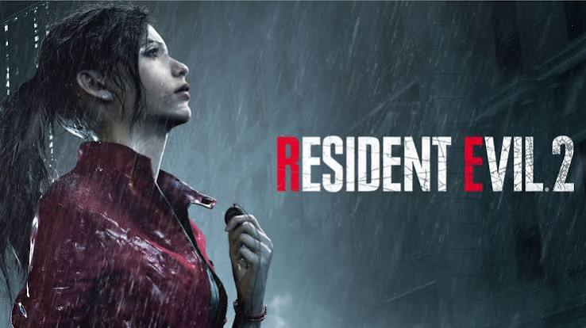

Claire Redfield

Profissão: Estudante universitária
Primeira aparição: Resident Evil 2 (1998)
Parentes: Chris Redfield (irmão)
Claire chega a Raccoon City procurando o irmão, Chris, e se vê no meio do caos. No caminho encontra Sherry Birkin, uma menina perseguida pelo próprio pai, e passa a protegê-la.
No jogo
- Ao longo da campanha tenta escapar da cidade ao lado de Sherry.
- Enfrenta Mr. X e G (William Birkin).
- Campanhas A e B se complementam com as de Leon.